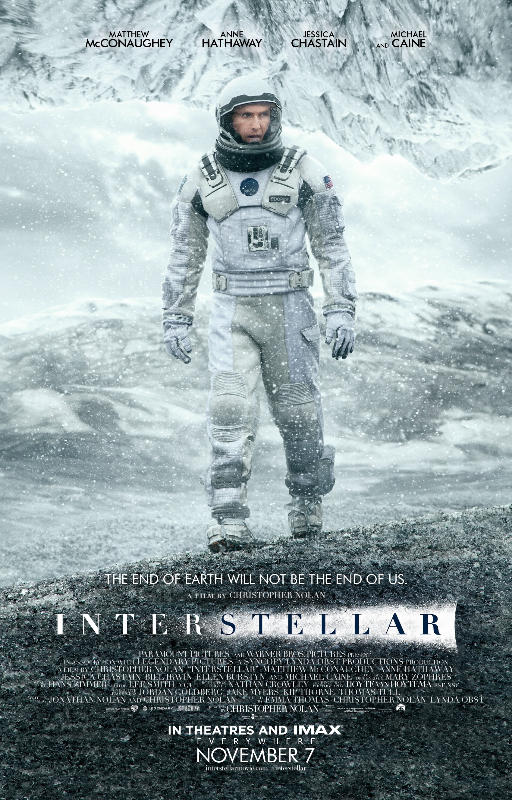

Интерстеллар Interstellar

«Следующий шаг человечества станет величайшим» В недалёком будущем человечество находится на стадии регресса: высокие технологии нас уже не так заботят, как первостепенная потребность в пище.
Профессия фермера становится одной из самых уважаемых, и ремесло это не простое, поскольку по определённым причинам природа больше нам не друг - одна за одной гибнут целые растительные культуры, отказываясь давать
урожай. На этом фоне бывший пилот, а ныне фермер Купер (Мэттью МакКонахи) получает предложение присоединиться к экспедиции, призванной проверить потенциально пригодные для жизни планеты в другой
Галактике, проход в которую в виде так называемой "кротовой норы" не так давно открылся в нашей Солнечной системе. Пока экспедиция будет занята поисками, доктор Брэнд (Майкл Кейн) здесь на Земле должен будет завершить свои исследования и разработки, в результате которых он планирует найти действенный способ переправить население планеты в новый дом. Но если вдруг он не найдёт его - на борту межзвёздного
корабля имеется достаточный запас земного генофонда, чтобы запустить популяцию "с нуля" - этот не радужный вариант развития событий именуется "план Б". В качестве формы в своей последней работе
Нолан использует такой вот, условно говоря, "фантастический" сюжет, в котором, впрочем, современных научных исследований куда больше, чем каких-то фантазий создателей. Без второго, правда, тоже не обошлось - но
об этом чуть позже. На данном же этапе стоит сказать, что сценарий действительно очень плотно опирается на современную физику и существующие на данный момент теории, и использует множество научных терминов - так
что если вы, скажем, не знаете, что такое "горизонт событий", и почему по мере приближения к чёрной дыре время замедляется - имеет смысл немного подготовить себя ещё до просмотра фильма, чтобы вы могли понимать,
о чём говорят герои. За всей этой физикой и математикой, само собой, находятся реальные человеческие судьбы, чувства и переживания. Фильм ещё в начале, до отлёта Купера уделяет долгое время демонстрации семейных
взаимодействий - но там, в "обычной" земной среде это выглядит вполне обыденно. Однако, по мере развития сюжета, эмоции и факторы, которые их порождают, постепенно обретают совсем иную форму - здесь уже Нолан запутывает этот клубок,
состоящий из несовершенства нашей психики, инстинктов и чувств по отношению к окружающим гораздо плотнее. В эмоциональном плане фильм оказывается очень сильным - причём без какой-либо условности или фальши. Именно
тут будет одна из самых запоминающихся сцен, которая производит такой эффект благодаря широте таланта великолепного МакКонахи. После неё уже нет никаких сомнений, что зритель останется с героем до конца во чтобы
то ни стало. Нолан будто бы противопоставляет холодный бездушный космос теплоте реальных человеческих чувств, подчёркивая их значимость. В этом отношении хотелось бы заметить, что кульминацию и её обоснование поймут,
наверное, не все, поскольку тут сюжет сходит с тропы науки о отправляется, в прямом смысле, в неизведанное - без спойлеров тут сложно говорить подробнее, поэтому просто рекомендую не воспринимать эту аллюзию буквально, и сфокусироваться
на том, какой смысл она собой несёт. Тут ещё важно читать между строк и видеть вещи в перспективе - и тогда можно заметить куда как больше логики, чем могло показаться на первый взгляд. Но будет ещё и неоднозначный финал, оставляющий
после себя смешанные чувства, и вливающий новый подтекст туда, где, казалось бы, уже всё разложено по полочкам.
"Интерстеллар" поражает своей многозадачностью и охватом поднимаемых тем. В какой-то степени это является и минусом, поскольку идей, заложенных в сценарий, с лихвой хватило бы на три-четыре фильма. От этого он
не всегда воспринимается ровно, и в какие-то моменты даже требует определённых усилий и концентрации при просмотре. Но достойным образом аккумулировать столько пищи для размышления в одном фильме, пусть и трёх часовом, по силу
единицам. Не говоря уже о том, насколько эффектно картина работает на верхнем внешнем уровне, комбинируя зрительные и звуковые образы. Визуально фильм совсем не похож на современные
цифровые блокбастеры: снятый на плёнку и с реальными декорациями он генерирует совершенно неповторимую атмосферу. То же касается и звукового ряда - Циммер
чётко уловил настроение: саунд старомодный, небанальный и яркий. Это удивительно глубокое, прекрасное авторское кино - долгожданная одиссея Нолана, которая остаётся в памяти очень и очень надолго.